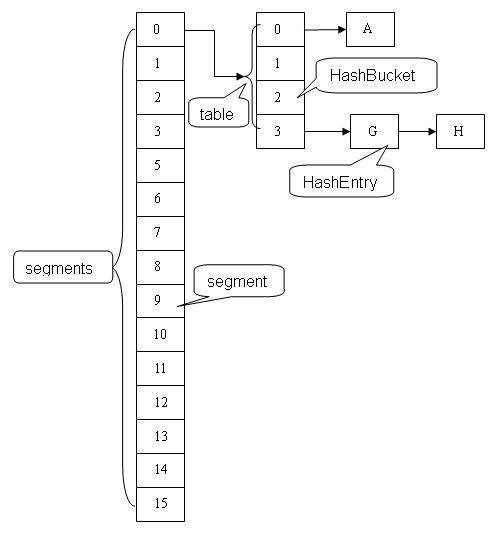
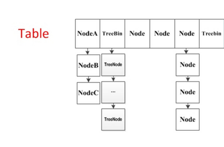

前言
HashMap是我们平时开发过程中用的比较多的集合，但它是非线程安全的，在涉及到多线程并发的情况，进行put操作有可能会引起死循环，导致CPU利用率接近100%。
final HashMap<String, String> map = new HashMap<String, String>(2);
for (int i = 0; i < 10000; i++) {
new Thread(new Runnable() {
@Override
public void run() {
map.put(UUID.randomUUID().toString(), "");
}
}).start();
}
解决方案有Hashtable和Collections.synchronizedMap(hashMap)，不过这两个方案基本上是对读写进行加锁操作，一个线程在读写元素，其余线程必须等待，性能可想而知。
所以，Doug Lea给我们带来了并发安全的ConcurrentHashMap，它的实现是依赖于 Java 内存模型，所以我们在了解 ConcurrentHashMap 的之前必须了解一些底层的知识：
- java内存模型
- java中的CAS
- AbstractQueuedSynchronizer
- ReentrantLock
本文源码是JDK8的版本，与之前的版本有较大差异。
JDK1.6分析
ConcurrentHashMap采用 分段锁的机制，实现并发的更新操作，底层采用数组+链表+红黑树的存储结构。 其包含两个核心静态内部类 Segment和HashEntry。
- Segment继承ReentrantLock用来充当锁的角色，每个 Segment 对象守护每个散列映射表的若干个桶。
- HashEntry 用来封装映射表的键 / 值对；
- 每个桶是由若干个 HashEntry 对象链接起来的链表。
一个 ConcurrentHashMap 实例中包含由若干个 Segment 对象组成的数组，下面我们通过一个图来演示一下 ConcurrentHashMap 的结构：

JDK1.8分析
1.8的实现已经抛弃了Segment分段锁机制，利用CAS+Synchronized来保证并发更新的安全，底层依然采用数组+链表+红黑树的存储结构。

重要概念
在开始之前，有些重要的概念需要介绍一下：
table：默认为null，初始化发生在第一次插入操作，默认大小为16的数组，用来存储Node节点数据，扩容时大小总是2的幂次方。
nextTable：默认为null，扩容时新生成的数组，其大小为原数组的两倍。
sizeCtl
：默认为0，用来控制table的初始化和扩容操作，具体应用在后续会体现出来。
- -1 代表table正在初始化
- -N 表示有N-1个线程正在进行扩容操作
- 其余情况： 1、如果table未初始化，表示table需要初始化的大小。 2、如果table初始化完成，表示table的容量，默认是table大小的0.75倍，居然用这个公式算0.75（n - (n >>> 2)）。
Node
：保存key，value及key的hash值的数据结构。
class Node<K,V> implements Map.Entry<K,V> { final int hash; final K key; volatile V val; volatile Node<K,V> next; ... 省略部分代码 }其中value和next都用volatile修饰，保证并发的可见性。
ForwardingNode
：一个特殊的Node节点，hash值为-1，其中存储nextTable的引用。
final class ForwardingNode<K,V> extends Node<K,V> { final Node<K,V>[] nextTable; ForwardingNode(Node<K,V>[] tab) { super(MOVED, null, null, null); this.nextTable = tab; } }只有table发生扩容的时候，ForwardingNode才会发挥作用，作为一个占位符放在table中表示当前节点为null或则已经被移动。
实例初始化
实例化ConcurrentHashMap时带参数时，会根据参数调整table的大小，假设参数为100，最终会调整成256，确保table的大小总是2的幂次方，算法如下：
ConcurrentHashMap<String, String> hashMap = new ConcurrentHashMap<>(100);
private static final int tableSizeFor(int c) {
int n = c - 1;
n |= n >>> 1;
n |= n >>> 2;
n |= n >>> 4;
n |= n >>> 8;
n |= n >>> 16;
return (n < 0) ? 1 : (n >= MAXIMUM_CAPACITY) ? MAXIMUM_CAPACITY : n + 1;
}
注意，ConcurrentHashMap在构造函数中只会初始化sizeCtl值，并不会直接初始化table，而是延缓到第一次put操作。
table初始化
前面已经提到过，table初始化操作会延缓到第一次put行为。但是put是可以并发执行的，Doug Lea是如何实现table只初始化一次的？让我们来看看源码的实现。
private final Node<K,V>[] initTable() {
Node<K,V>[] tab; int sc;
while ((tab = table) == null || tab.length == 0) {
//如果一个线程发现sizeCtl<0，意味着另外的线程执行CAS操作成功，当前线程只需要让出cpu时间片
if ((sc = sizeCtl) < 0)
Thread.yield(); // lost initialization race; just spin
else if (U.compareAndSwapInt(this, SIZECTL, sc, -1)) {
try {
if ((tab = table) == null || tab.length == 0) {
int n = (sc > 0) ? sc : DEFAULT_CAPACITY;
@SuppressWarnings("unchecked")
Node<K,V>[] nt = (Node<K,V>[])new Node<?,?>[n];
table = tab = nt;
sc = n - (n >>> 2);
}
} finally {
sizeCtl = sc;
}
break;
}
}
return tab;
}
sizeCtl默认为0，如果ConcurrentHashMap实例化时有传参数，sizeCtl会是一个2的幂次方的值。所以执行第一次put操作的线程会执行Unsafe.compareAndSwapInt方法修改sizeCtl为-1，有且只有一个线程能够修改成功，其它线程通过Thread.yield()让出CPU时间片等待table初始化完成。
put操作
假设table已经初始化完成，put操作采用CAS+synchronized实现并发插入或更新操作，具体实现如下。
final V putVal(K key, V value, boolean onlyIfAbsent) {
if (key == null || value == null) throw new NullPointerException();
int hash = spread(key.hashCode());
int binCount = 0;
for (Node<K,V>[] tab = table;;) {
Node<K,V> f; int n, i, fh;
if (tab == null || (n = tab.length) == 0)
tab = initTable();
else if ((f = tabAt(tab, i = (n - 1) & hash)) == null) {
if (casTabAt(tab, i, null, new Node<K,V>(hash, key, value, null)))
break; // no lock when adding to empty bin
}
else if ((fh = f.hash) == MOVED)
tab = helpTransfer(tab, f);
...省略部分代码
}
addCount(1L, binCount);
return null;
}
hash算法
static final int spread(int h) {return (h ^ (h >>> 16)) & HASH_BITS;}table中定位索引位置，n是table的大小
int index = (n - 1) & hash获取table中对应索引的元素f。 Doug Lea采用Unsafe.getObjectVolatile来获取，也许有人质疑，直接table[index]不可以么，为什么要这么复杂？ 在java内存模型中，我们已经知道每个线程都有一个工作内存，里面存储着table的副本，虽然table是volatile修饰的，但不能保证线程每次都拿到table中的最新元素，Unsafe.getObjectVolatile可以直接获取指定内存的数据，保证了每次拿到数据都是最新的。
如果f为null，说明table中这个位置第一次插入元素，利用Unsafe.compareAndSwapObject方法插入Node节点。
- 如果CAS成功，说明Node节点已经插入，随后addCount(1L, binCount)方法会检查当前容量是否需要进行扩容。
- 如果CAS失败，说明有其它线程提前插入了节点，自旋重新尝试在这个位置插入节点。
如果f的hash值为-1，说明当前f是ForwardingNode节点，意味有其它线程正在扩容，则一起进行扩容操作。
其余情况把新的Node节点按链表或红黑树的方式插入到合适的位置，这个过程采用同步内置锁实现并发，代码如下:
synchronized (f) { if (tabAt(tab, i) == f) { if (fh >= 0) { binCount = 1; for (Node<K,V> e = f;; ++binCount) { K ek; if (e.hash == hash && ((ek = e.key) == key || (ek != null && key.equals(ek)))) { oldVal = e.val; if (!onlyIfAbsent) e.val = value; break; } Node<K,V> pred = e; if ((e = e.next) == null) { pred.next = new Node<K,V>(hash, key, value, null); break; } } } else if (f instanceof TreeBin) { Node<K,V> p; binCount = 2; if ((p = ((TreeBin<K,V>)f).putTreeVal(hash, key, value)) != null) { oldVal = p.val; if (!onlyIfAbsent) p.val = value; } } } }在节点f上进行同步，节点插入之前，再次利用tabAt(tab, i) == f判断，防止被其它线程修改。
- 如果f.hash >= 0，说明f是链表结构的头结点，遍历链表，如果找到对应的node节点，则修改value，否则在链表尾部加入节点。
- 如果f是TreeBin类型节点，说明f是红黑树根节点，则在树结构上遍历元素，更新或增加节点。
- 如果链表中节点数binCount >= TREEIFY_THRESHOLD(默认是8)，则把链表转化为红黑树结构。
table扩容
当table容量不足的时候，即table的元素数量达到容量阈值sizeCtl，需要对table进行扩容。 整个扩容分为两部分：
- 构建一个nextTable，大小为table的两倍。
- 把table的数据复制到nextTable中。
这两个过程在单线程下实现很简单，但是ConcurrentHashMap是支持并发插入的，扩容操作自然也会有并发的出现，这种情况下，第二步可以支持节点的并发复制，这样性能自然提升不少，但实现的复杂度也上升了一个台阶。
先看第一步，构建nextTable，毫无疑问，这个过程只能只有单个线程进行nextTable的初始化，具体实现如下：
private final void addCount(long x, int check) {
... 省略部分代码
if (check >= 0) {
Node<K,V>[] tab, nt; int n, sc;
while (s >= (long)(sc = sizeCtl) && (tab = table) != null &&
(n = tab.length) < MAXIMUM_CAPACITY) {
int rs = resizeStamp(n);
if (sc < 0) {
if ((sc >>> RESIZE_STAMP_SHIFT) != rs || sc == rs + 1 ||
sc == rs + MAX_RESIZERS || (nt = nextTable) == null ||
transferIndex <= 0)
break;
if (U.compareAndSwapInt(this, SIZECTL, sc, sc + 1))
transfer(tab, nt);
}
else if (U.compareAndSwapInt(this, SIZECTL, sc,
(rs << RESIZE_STAMP_SHIFT) + 2))
transfer(tab, null);
s = sumCount();
}
}
}
通过Unsafe.compareAndSwapInt修改sizeCtl值，保证只有一个线程能够初始化nextTable，扩容后的数组长度为原来的两倍，但是容量是原来的1.5。
节点从table移动到nextTable，大体思想是遍历、复制的过程。
- 首先根据运算得到需要遍历的次数i，然后利用tabAt方法获得i位置的元素f，初始化一个forwardNode实例fwd。
- 如果f == null，则在table中的i位置放入fwd，这个过程是采用Unsafe.compareAndSwapObjectf方法实现的，很巧妙的实现了节点的并发移动。
- 如果f是链表的头节点，就构造一个反序链表，把他们分别放在nextTable的i和i+n的位置上，移动完成，采用Unsafe.putObjectVolatile方法给table原位置赋值fwd。
- 如果f是TreeBin节点，也做一个反序处理，并判断是否需要untreeify，把处理的结果分别放在nextTable的i和i+n的位置上，移动完成，同样采用Unsafe.putObjectVolatile方法给table原位置赋值fwd。
遍历过所有的节点以后就完成了复制工作，把table指向nextTable，并更新sizeCtl为新数组大小的0.75倍 ，扩容完成。
红黑树构造
注意：如果链表结构中元素超过TREEIFY_THRESHOLD阈值，默认为8个，则把链表转化为红黑树，提高遍历查询效率。
if (binCount != 0) {
if (binCount >= TREEIFY_THRESHOLD)
treeifyBin(tab, i);
if (oldVal != null)
return oldVal;
break;
}
接下来我们看看如何构造树结构，代码如下：
private final void treeifyBin(Node<K,V>[] tab, int index) {
Node<K,V> b; int n, sc;
if (tab != null) {
if ((n = tab.length) < MIN_TREEIFY_CAPACITY)
tryPresize(n << 1);
else if ((b = tabAt(tab, index)) != null && b.hash >= 0) {
synchronized (b) {
if (tabAt(tab, index) == b) {
TreeNode<K,V> hd = null, tl = null;
for (Node<K,V> e = b; e != null; e = e.next) {
TreeNode<K,V> p =
new TreeNode<K,V>(e.hash, e.key, e.val,
null, null);
if ((p.prev = tl) == null)
hd = p;
else
tl.next = p;
tl = p;
}
setTabAt(tab, index, new TreeBin<K,V>(hd));
}
}
}
}
}
可以看出，生成树节点的代码块是同步的，进入同步代码块之后，再次验证table中index位置元素是否被修改过。 1、根据table中index位置Node链表，重新生成一个hd为头结点的TreeNode链表。 2、根据hd头结点，生成TreeBin树结构，并把树结构的root节点写到table的index位置的内存中，具体实现如下：
TreeBin(TreeNode<K,V> b) {
super(TREEBIN, null, null, null);
this.first = b;
TreeNode<K,V> r = null;
for (TreeNode<K,V> x = b, next; x != null; x = next) {
next = (TreeNode<K,V>)x.next;
x.left = x.right = null;
if (r == null) {
x.parent = null;
x.red = false;
r = x;
}
else {
K k = x.key;
int h = x.hash;
Class<?> kc = null;
for (TreeNode<K,V> p = r;;) {
int dir, ph;
K pk = p.key;
if ((ph = p.hash) > h)
dir = -1;
else if (ph < h)
dir = 1;
else if ((kc == null &&
(kc = comparableClassFor(k)) == null) ||
(dir = compareComparables(kc, k, pk)) == 0)
dir = tieBreakOrder(k, pk);
TreeNode<K,V> xp = p;
if ((p = (dir <= 0) ? p.left : p.right) == null) {
x.parent = xp;
if (dir <= 0)
xp.left = x;
else
xp.right = x;
r = balanceInsertion(r, x);
break;
}
}
}
}
this.root = r;
assert checkInvariants(root);
}
主要根据Node节点的hash值大小构建二叉树。这个红黑树的构造过程实在有点复杂，感兴趣的同学可以看看源码。
get操作
get操作和put操作相比，显得简单了许多。
public V get(Object key) {
Node<K,V>[] tab; Node<K,V> e, p; int n, eh; K ek;
int h = spread(key.hashCode());
if ((tab = table) != null && (n = tab.length) > 0 &&
(e = tabAt(tab, (n - 1) & h)) != null) {
if ((eh = e.hash) == h) {
if ((ek = e.key) == key || (ek != null && key.equals(ek)))
return e.val;
}
else if (eh < 0)
return (p = e.find(h, key)) != null ? p.val : null;
while ((e = e.next) != null) {
if (e.hash == h &&
((ek = e.key) == key || (ek != null && key.equals(ek))))
return e.val;
}
}
return null;
}
- 判断table是否为空，如果为空，直接返回null。
- 计算key的hash值，并获取指定table中指定位置的Node节点，通过遍历链表或则树结构找到对应的节点，返回value值。
总结
ConcurrentHashMap 是一个并发散列映射表的实现，它允许完全并发的读取，并且支持给定数量的并发更新。相比于 HashTable 和同步包装器包装的 HashMap，使用一个全局的锁来同步不同线程间的并发访问，同一时间点，只能有一个线程持有锁，也就是说在同一时间点，只能有一个线程能访问容器，这虽然保证多线程间的安全并发访问，但同时也导致对容器的访问变成串行化的了。